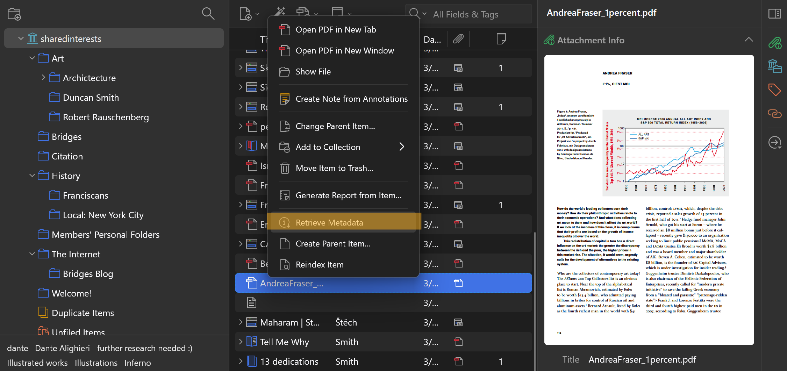
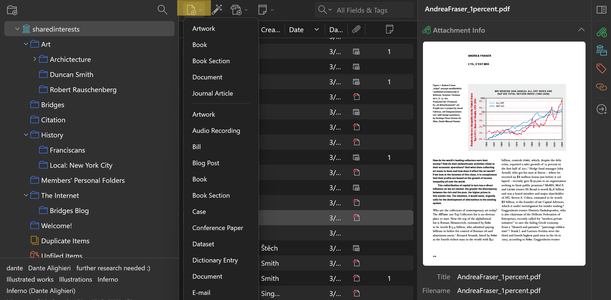
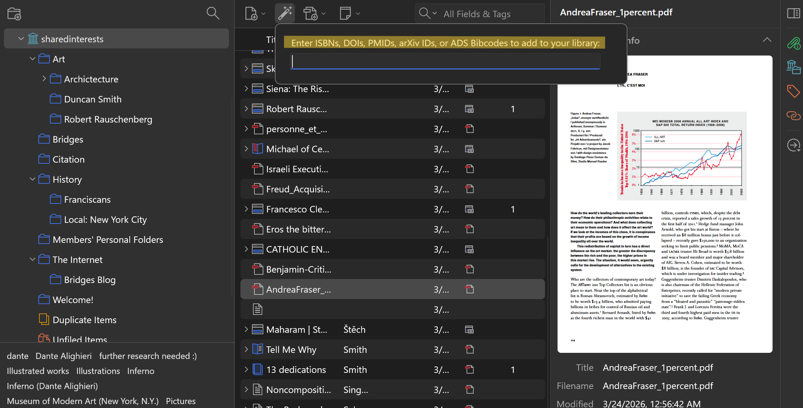

About
How to Join
How to Use
Shared Interests uses a public Zotero group as a "social library" where members can pool resources, collaborate on research projects, and generally see what their friends are interested in lately.
While the purpose of Shared Interests is to provide digital infrastructure in the service of those goals, another of the aims of Shared Interests is to experiment with communal management and curation of shared research materials.
Some of the tips/notes in this section will be quite general, speaking simply to the use of Zotero groups. Others will be more specific to the particular ways that we have chosen to manage the library and its governance.
Notes of this kind are always subject to collective revisions, and we welcome suggestions in the running "Ideas Note" in the Welcome Document in the library. Members can also reply to the suggestions thread on the Zotero group page.
We highly recommend that members download the Zotero desktop application; you can also use Zotero in your browser, but the desktop application is more robust and allows you to navigate the library more easily.
How to Use the Library
1. To add a file to the library, click on the "New Item" button in the upper left corner of the Zotero window, and select the appropriate item type (e.g., book, article, webpage, etc.). Fill in the relevant information for the item, and then click "Save." The item will be added to the library and will be visible to all members. Most file types are supported.
a. Depending on the file you are uploading, Zotero can retrieve bibliographical information from the file's metadata. To do this, right click on the file and select "retrieve metadata" near the bottom of the dropdown. Otherwise you will need to



2. To add a folder to the library, click on the "New Collection" button in the upper left corner of the Zotero window. Give the collection a name, and then click "Save." The collection will be added to the library. Folders can be added to the library to organize items by topic, project, or any other criteria. To add an item to a folder, simply drag and drop the item into the desired collection.
In addition to the desktop application, members might be interested in the Zotero browser plugin, which allows for easy addition of webpage snapshots or files from online databases etc.
How We Manage the Library
All members are welcome to add whatever materials they like to the library, including new folders to categorize and store their files. Decisions about how to structure the library are made collectively in the File Structure Discussion Thread on Zotero, and posted in the File Structure Guide in the library.
While the library's file structure is subject to collective organization, members may want to create personal folders [identified by their (user)name], in which they are able to organize their materials however they choose.
For more granular information about Shared Interests' guidelines, members can refer to the Guidelines Note in the library. To propose or amend any guidelines, members can reply to the Guidelines Discussion Thread.